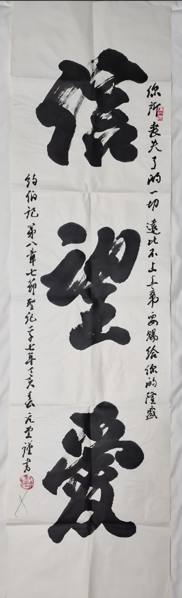

작품 상세 정보
분류: 족자 작품 (작품 05)
중심 대자: 信望愛 (신망애)
형식: 전통 세로 족자 (양쪽 협시 포함)
작가: 원당 김제운
해설 및 의미
1. 중심 글자 (대자)
가장 크게 적힌 세 글자는 「信望愛 (신망애)」입니다[span_1](start_span)[span_1](end_span). 기독교의 핵심 덕목인 '믿음(信), 소망(望), 사랑(愛)'을 뜻합니다[span_2](start_span)[span_2](end_span).
2. 양쪽 협시 (작은 글씨 내용)
- 오른쪽 줄: 성경 구절을 바탕으로 한 내용으로, 모든 것을 잃었을지라도 하나님이 주시는 은혜와 륭성함에 비할 바가 아니다 등의 위로와 신앙적 메시지를 담고 있습니다[span_3](start_span)[span_3](end_span). 우측 상단에는 붉은색 낙관(인장)이 찍혀 있습니다[span_4](start_span)[span_4](end_span).
- 왼쪽 줄: 출처와 날짜, 서예를 쓴 작가의 기록이 담겨 있습니다[span_5](start_span)[span_5](end_span). 성경 구절인 '욥기 8장 7절 (약백기제팔장칠절)'을 인용하고 있음을 명시하고 있으며, 하단에는 작가의 서명과 낙관이 있습니다[span_6](start_span)[span_6](end_span).
참고 (욥기 8장 7절 구절 내용)
"네 시작은 미약하였으나 네 나중은 심히 창대하리라"[span_7](start_span)[span_7](end_span)
요약 및 감상
이 작품은 성경(욥기)의 구절을 인용하고 기독교의 근본 정신인 '믿음, 소망, 사랑'을 힘찬 필치로 적어내어, 시련 속에서도 믿음을 잃지 않고 소망과 사랑 가운데 살아아가기를 바라는 신앙적 의미를 담은 서예 작품입니다[span_8](start_span)[span_8](end_span).